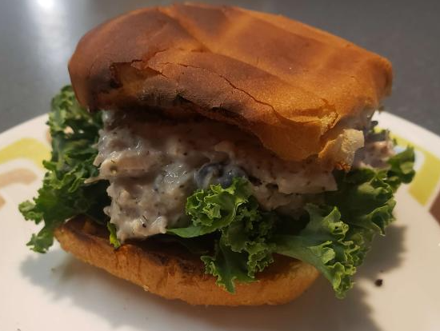

back to Index
dillweed sandwich
I saw some canned chicken in my pantry and decided to make some chicken salad, but when i was thinking of things to put in it, my mind wandered to a $7 sandwich i had at Ikea. the Skagen Croissant Sandwich. it was a shrimp salad sandwich with dillweed in it. I decided to try to recreate it with chicken!

Ingredients
1 can shreaded chicken
4 Tbsp Mayonaise
a generous amount of dillweed
cooking
Mix the chicken and mayonaise together, breaking up the chunks of chicken. Next, add the dillweed to taste, i used about a Tablespoon. In the picture i toasted a hamburger bun and put some kale on it, but a croissant would have been better if i had one.